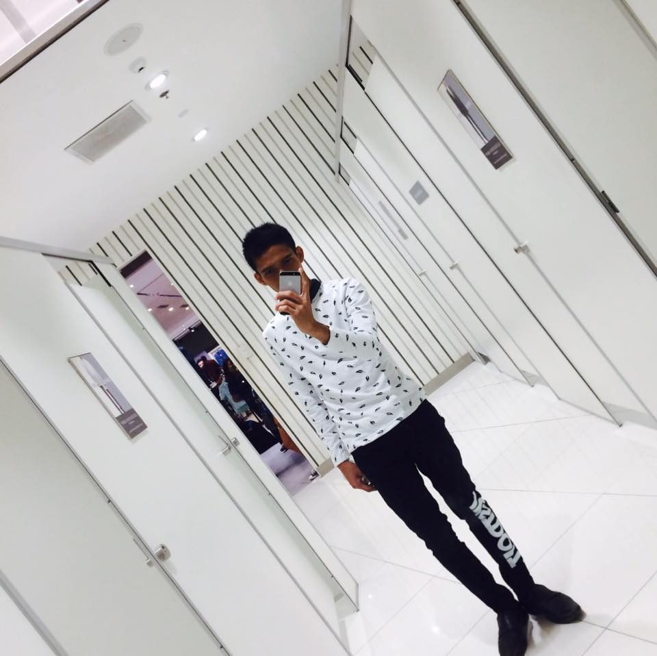

Welcome!
Nandito na si Chito, si Chito Miranda Nandito na si Kiko, si Francis Magalona Nandito na si Gloc-9, wala s'yang apelyido Magbabagsakan dito in five, four, three, two Nandito na si Chito, si Chito Miranda Nandito rin si Kiko, si Francis Magalona Nandito rin si Gloc-9, wala s'yang apelyido Magbabagsakan dito, mauuna si Chito 'Di ko alam kung ba't ako kasama dito Sama-sama sa mga pasabog nila Kiko at ni Gloc Astig, patinikan ng bibig Teka muna, teka lang, painom muna ng tubig Shift sa segunda bago mapatumba Dapat makaisip ka ng rhyme na maganda At madulas ang pagbigkas At astig, baka sakaling marinig ng Libo-libo na Pilipinong nakikinig sa mga pabibo ko 'Di ka ba nagugulat sa mga naganap? 'Di ko din alam kung ba't ako sikat Para bang panaginip na pinilit makamit Talagang sinusulit ang pagiging makulit Kailangang galingan, hindi na kayang tapatan Ang tugtugan ng Parokya at ang aming samahan Shit, pa'no 'to, wala na 'kong masabi Ngunit kailangang gumalaw ng mga labi kong ito Kunyari, nagbabakasakali Na magaling din ako kaya nasali na Natapos na si Chito, si Chito Miranda Nandito na si Kiko, si Francis Magalona Nandito rin si Gloc-9, wala s'yang apelyido Magbabagsakan dito, babanat na si Kiko
It ain't an UZI or Ingram, triggers on the maximum Not a 45' or 44' Magnum And it ain't even a 357 Nor 12' gauge, but the mouth, so listen Nandito na si Kiko at kasama ko si Chito at si Gloc-9 And it's time to rock rhyme 'Di ko mapigilang lumabas ang mga salita sa aking bibig Na 'di padadaig ang bunganga, hala, tumunganga Lahat napapahanga sa talento, ako'y taga-Kalentong Batang Mandaluyong na ngayon nakatira sa Antipolo Sumasaklolo sa mga hip-hop Pwede career-in o pwede rin trip lang Si Gloc, kasama ng Parokya Parang Bulagaan na kailangan 'di mabokya 'Di mo na kailangan pang malaman kung bakit pa Kaming lahat ay nagsama-sama Mic check, eto na, nagsanib na ang puwersa Francis Magalona, Gloc-9 at ang Parokya One, two, three, four, let's volt in Natapos na si Chito, si Chito Miranda Tapos na rin si Kiko, si Francis Magalona Nandito na si Gloc-9 (ah, mic check, mic check) Wala s'yang apelyido (okay na ba 'yung mic?) Magbabagsakan dito, kailangan nang mag-ingat At ang huling bagsakan, si Gloc-9 ang babanat Bato-bato sa langit, ang tamaa'y 'wag magalit Bawal ang nakasimangot, baka lalo kang pumangit Pero okay lang, 'di naman kami mga suplado Sumabay ka sa 'min na parang naka-eroplano Sa tunog ng gitara kasama ng pinakamalupit na banda Pati si Kiko, magaling, 'di pa rin kayang tapatan Parang awit na lagi mong binabalik-balikan Stop, rewind and play mo Napakasaya na para bang birthday ko Alam mo na siguro'ng ibig kong sabihin 'Di na kailangan pang paikut-ikutin, baka lalong matagalan lang Lumapit at makinig para 'yong maintindihan Mga salitang sinulat na hindi ko pa bilang Pero pwedeng ilatag na parang banig na higaan 'Pag hinawakan ang mikropono, parang nabubuwang Teka, 'di naman siguro Ganyan lang 'pag gumagawa kami ng bago, medyo nabibilisan 'Di mo naisip na pwedeng mangyaring Magkasama-sama, lahat ay kasali, game Ngayon lang narinig, 'di na 'to madadaig Nagsama-sama sa bagsakan at naging isang bibig Mag-ingat-ingat ka nga't baka masindak sapagkat nandito na si Chito at si Kiko at si Gloc.
|  |
About MyselfORAYT IM GOOD. Almost heaven, West Virginia Blue Ridge Mountains, Shenandoah River Life is old there, older than the trees Younger than the mountains, growin' like a breeze Country roads, take me home To the place I belong West Virginia, mountain mama Take me home, country roads All my memories gather 'round her Miner's lady, stranger to blue water Dark and dusty, painted on the sky Misty taste of moonshine, teardrop in my eye Country roads, take me home To the place I belong West Virginia, mountain mama Take me home, country roads I hear her voice in the mornin' hour, she calls me The radio reminds me of my home far away Drivin' down the road, I get a feelin' That I should've been home yesterday, yesterday Country roads, take me home To the place I belong West Virginia, mountain mama Take me home, country roads Country roads, take me home To the place I belong West Virginia, mountain mama Take me home, country roads Take me home, (down) country roads Take me home, (down) country roads |
Skills
| Hero | Hero type | Role | Favorite-Skill |
|---|---|---|---|
| Uranos | Tank | OffLane | Ultimate |
| Miya | Marksman | GoldLane | Ultimate |
| Ruby | Fighter/tank | OffLane | Ultimate |
| Fanny | Assassin | Jungler | Cable |
| Nana | Mage | MidLane | Rabit |
Contact Info
- Cebu, City 123 st.
- ML Champion @ AE.G Christmas Tournament
- #8700
-
__Jeremyford@gwapo.com
 Jford@insta.y8
jford@twitter.friv
Jford@insta.y8
jford@twitter.friv